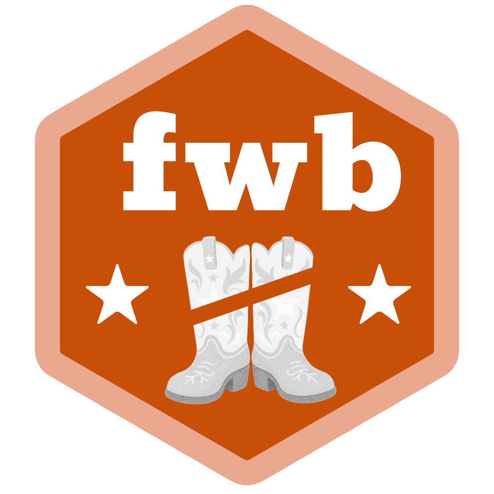

Reproducibility and Parallelization with `fwb`
Source:vignettes/fwb-rep.Rmd
fwb-rep.RmdReproducibility means that re-running the same analysis yields
identical results. Because bootstrap weights are drawn at random, this
takes some care in general. In fwb, it is as simple as setting
the seed prior to calling fwb() or
vcovFWB().
The short version
Call set.seed() before fwb(), replacing
{N} with your favorite integer:
That is the whole procedure, and the same one works for
vcovFWB(). You do not need to choose a particular random
number generator, and you do not need to do anything differently when
you parallelize.
What is and is not guaranteed
The bootstrap weights are a function of the state of the random
number generator when fwb() is called. Nothing about
how the work is carried out enters into them. So none of the
following changes your results:
- the value of
cl; no parallelization, an integer, aclusterobject, or"future" - the number of workers, or the future plan in use
- the value of
verbose, i.e., whether a progress bar is displayed - the random number generator in effect (
RNGkind()) - whether the function supplied to
statisticdraws random numbers of its own
An analysis is therefore reproducible on a machine with a different
number of cores, or by a collaborator who prefers a different parallel
backend. Switching from cl = 2 to
cl = "future" to inspect a slow bootstrap is free: you get
the same numbers back.
What does determine the results is the seed together with
the arguments that define the bootstrap itself: R,
wtype, strata, cluster, and
simple (see below). One further exception is described
under Using futurize.
Why this works
Before any bootstrap replication runs, fwb() reserves a
separate random number stream for each of the R
replications, and each replication draws its weights from the stream
reserved for it. (These are L’Ecuyer-CMRG streams, generated with
parallel::nextRNGStream().) The streams are derived from
the calling session’s generator state, which is what
set.seed() sets, and they are recorded in the returned
object.
Two useful things follow. First, the weights for a given replication
depend on the seed and on the replication number, and not on which
worker happened to run it or in what order, so a parallel backend cannot
change them. Second, because the seeds used to generate the weights are
recorded, the weights that were used can be perfectly reproduced rather
than inferred, so fwb.array() can hand them back exactly
without needing the backend that produced them.
What changed, and reproducing older results
Results from fwb 0.6.0 and earlier cannot be
reproduced with version 0.7.0 or later when
simple = TRUE, which is the default for every
wtype except "multinom". If you need to
reproduce a specific earlier analysis, install the version it was run
under1.
Results with simple = FALSE are unchanged.
Before version 0.7.0, weights were drawn inside each bootstrap
replication, from whatever random number stream the worker running it
happened to have. That made the results depend on how the work was
distributed, and reproducing them required arranging the workers’
streams by hand. The guidance was correspondingly involved: it depended
on cl, on simple, on whether
statistic was random, and on verbose, and with
a cluster object it required
parallel::clusterSetRNGStream() instead of
set.seed().
None of that applies now, and two pieces of it are worth calling out because following them today would be actively counterproductive:
-
parallel::clusterSetRNGStream()no longer has any effect onfwb(). The workers’ own streams are never used to draw weights. Code that relies on it in place ofset.seed()is not reproducible. -
set.seed(., "L'Ecuyer-CMRG")is no longer needed.set.seed()with any generator is enough, and the choice of generator no longer affects whether parallel results can be reproduced. Note that different generators select different streams, so the same integer gives different (individually reproducible) results with and without thekindargument.
The simple argument
simple controls when the weights are drawn. With
simple = FALSE, the entire R × n
weight matrix is drawn in one step before statistic is
applied to anything; with simple = TRUE, each replication
draws its own weights as it runs, which avoids holding the whole matrix
in memory.
Both settings are fully reproducible, and both draw from the same
weight distribution, so either supports valid inference. But they
consume their random number streams differently, and so
simple = TRUE and simple = FALSE do not give
the same replicates as each other, even with the same seed. Prior to
version 0.7.0 they did coincide for the continuous weight types, so this
is worth knowing if you have code that switched between them freely.
The default is simple = TRUE except when
wtype = "multinom", where simple = FALSE is
used so that results match boot::boot(., stype = "f")
exactly.
BCa confidence intervals
Bias-corrected and accelerated (BCa) intervals need the empirical
influence of each unit on the bootstrap estimates, which means
recovering the weights that were used. Because those weights are
recorded (i.e., via the seeds that generated them),
fwb.ci(., type = "bca") and
summary(., ci.type = "bca") work without any preparation on
your part, whatever cl was set to and whether or not
statistic is random.
Before version 0.7.0 of fwb, BCa intervals were refused
outright when simple = TRUE and statistic had
a random component. BCa intervals still require more bootstrap
replications than there are units in the data, and still cannot be used
with cluster (i.e., with the clustered bootstrap).
Choosing a parallel backend
Since the choice does not affect your results, it can be made on
practical grounds. cl accepts an integer (forking; not
available on Windows), a cluster object from
parallel::makeCluster(), or the string
"future" to use whatever backend
future::plan() has set up. The futurize package
offers a further route, described below.
Two things do differ between backends, neither of which concerns reproducibility:
-
Packages on the workers. A
clusterobject starts fresh R processes with no packages attached, so astatisticthat calls functions from another package needs that package attached there, e.g., withparallel::clusterEvalQ(cl, library(mypkg)). fwb itself is attached for you, so thew_*()functions (e.g.,w_mean(),w_std()) can be used without extra effort. Forking andfuturebackends handle this on their own. - Progress reporting. See below.
Using futurize
The futurize package can parallelize an fwb()
call by piping it:
This is reproducible in the ordinary way, and a plain
set.seed() is all it needs. There is one wrinkle worth
knowing about, and it is the single exception to “only the seed
matters”:
Adding or removing |> futurize() changes the
replicates. futurize switches the generator to
L’Ecuyer-CMRG for the duration of the call, and doing so re-initializes
the generator state even when L’Ecuyer-CMRG is already in use. The
streams fwb then reserves are a deterministic function of your
seed, but not the same ones a call without the pipe would have used.
Reproducing a result therefore means reproducing whether
futurize() was used.
See vignette("futurize-81-fwb", package = "futurize")
for more details on using futurize with fwb.
Progress bars
fwb() displays a progress bar when
verbose = TRUE, using the pbapply package. This
works with every backend and, unlike in earlier versions, has no effect
on the results. Its default is TRUE when running
sequentially and FALSE when parallelizing.
Alternatively, the progressify package routes progress through progressr, which lets you choose the reporter:
library(progressify)
handlers(global = TRUE)
set.seed({N})
f.out <- fwb(.) |> progressify()When using parallelization in combination with progressify,
a future backend must be used (i.e.,
cl = "future", or the futurize() pipe
described above) because progressr has no way to receive
updates from a forked worker. With cl set to an integer or
a cluster object, the bootstrap runs correctly but no
progress is reported. Use verbose = TRUE in that case to
display a progress bar.
See
vignette("progressify-81-fwb", package = "progressify") for
more details on using progressify with fwb.
A note on statistic
statistic may draw random numbers; doing so no longer
costs you anything in reproducibility, because each replication’s
weights are drawn from a stream reserved in advance and cannot be
shifted by what statistic did in an earlier replication.
Its own draws are reproducible too, for the same reason.
Two things are still worth avoiding. Do not call
set.seed() inside statistic: that would give
every replication the same draws. And be aware that a
statistic that parallelizes internally, on top of
fwb’s own parallelization, may not be reproducible — that is a
property of the nested code, not of fwb().